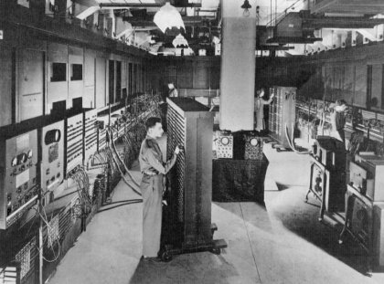
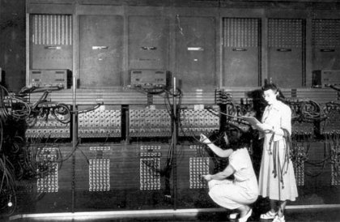

history
Trajectory calculation
At the time of World War II intelligent bombs were not yet developed, so ground based artillery was used to attack the enemy. Depending on the distance of the target and the type of artillery, the bullet has to be shoot in a certain angle. This angle also is related to the weather, especially to the wind. To know the correct angle in the specific situation, the artillery men used so-called firing tables. But those firing tables had to be computed first.
Those ballistic computations were done at the Moore School of Electrical Engineering, part of the University of Pennsylvania, too.
Calculating a trajectory could take up to 40 hours using a desk-top calculator. The same problem took 30 minutes or so on the Moore School's differential analyzer. But the School had only one such machine, and since each firing table involved hundreds of trajectories it might still take the better part of a month to complete just one table. [1]
The speed up in developing new artillery designs caused an increased need of computation power. In November 1942 US forces landed in French North Africa, and entered a terrain, which was entirely different from what they had met before. The existing firing tables turned out as completely useless. That made the computation power totally to the bottleneck of the war machinery.

View of the ENIAC in its U-shaped room (US Army photo)
Under these circumstances John Mauchly, a member of Moore School's Engineering, Science, and Management War Training (ESMWT) program, wrote a first five-page memo called The Use of Vacuum Tube Devices in Calculating. In this paper he suggested a machine that would add 5,000 10-digit numbers per second and would be more than 100 times faster than the fastest computer at that time (the fastest computer in 1942 was a mechanical relay computer operating at Harvard, Bell Laboratories with 15-50 additions per second [1]).
Speed up through vacuum tubes
The memo was followed by two proposals, which Mauchly wrote together with J. Presper Eckert, Jr., an instructor at Moore School. In June, 1942, a contract was signed and the project became funded by the United States Army. The machine to be developed was named Electronic Numerical Integrator And Computer, short ENIAC.
The ENIAC's great innovation was the usage of vacuum tubes for number representation in contrast to mechanical relays, which were commonly used at that time. The machine consists out of forty independent panels, each 0.6 m wide, 2.7 m high and 0.7 m deep plus three movable function tables. Those units were arranged in U shape occupying an area of about 10m by 17m [2]. The total number of 17,468 vacuum tubes were used. The first demonstration of the ENIAC's computing power could be given two years later:
In May of 1944, the ENIAC team was able to demonstrate ENIAC's workability in what has come to be known as the two accumulator test. In this, one accumulator was made to increment its value from one to five. The number was then transferred into the second unit one thousand times using the limited control circuitry housed in each accumulator, all in just over one fifth of a second, or about the blink of the eye. At the end of the test, the second accumulator sat idle, displaying the number 5,000 – hardly the most impressive of mathematical feats. [1]
One problem to deal with was the reliability of the vacuum tubes. For frequently used circuits the tubes were selected by hands, and special test procedures were implemented to identify a broken tube within minutes in case of a failure. This happened about two or three times a week causing a weekly downtime of only a few hours.
Programming the ENIAC
The ENIAC didn't have a memory to store programs. So programming the ENIAC means physically connecting the units by cables and turning switches to the appropriate settings. This work was done by six women whose jobs were called computers. They were chosen from a group of over eighty women that were calculating ballistic trajectories by hand.

The first professional programmers (US Army photo)
20 of the ENIAC's 40 units were Accumulators. An Accumulator was capable to store a 10-digit number, to add and to subtract. Other arithmetic units were the Multiplier, supported by the Function Table, and the Divider/Square-rooter. For fast number input, the Constant Transmitter was used, whereas for controlling the program flow a Master Programmer was helpful. The IO connection to stored data was done by an IBM card reader and an IBM card punch controlled by a printer panel. Finally there were the Cycling unit as pulse machine and the Initiating unit to boot the whole machine or to start a program.
In May 1945, yet before the ENIAC was formally completed, the World War II came to its end. That meant, the initial aim of computing firing tables for the artillery became obsolete. But the upcoming cold war required even more complex computations. So the first real task assigned to ENIAC during its test runs in 1945 involved millions of discrete calculations associated with top-secret studies of thermonuclear chain reactions – the hydrogen bomb. [1]
References
[1] D. Winegrad and A. Akere: A Short History of the Second American Revolution, In: ENIAC's 50th Anniversary: The Birth of the Information Age, The University of Pennsylvania Almanac N. 42, Jan. 1996.
[2] H. H. Goldstine and A. Goldstine (1946): The Electronic Numerical Integrator and Computer (ENIAC). In B. Randell (Eds.): The Origins of Digital Computers, Springer-Verlag (1982).